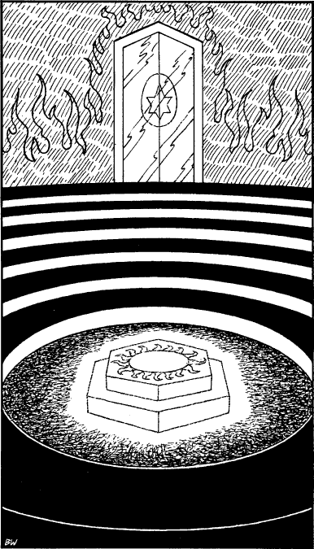

200
You follow her along passages and sloping tunnels, down long flights of stairs and through magnificent chambers that no human eye has ever seen before. The alien splendour of this ancient city leaves you in awe of the race that once dwelt in these halls. For interminable hours you follow in her wake until you arrive at a circular chamber of rust-red stone. The floor descends in a series of wide steps that encircle the room, and in the middle of the tiers is a shallow pit with a stone dais at its centre.

At your approach, the dais glows with a crimson light that pulses like a living heart. Shimmering waves of silvery radiance sweep the steps and a chorus of voices, soft and sirenic, echo through the upper reaches of the chamber. You surrender yourself to instinct and step upon the dais, cupping your hands before you and raising your face to the roof. A golden light pours out of the darkness, soaking you in its brilliance and filling your senses with a glowing warmth. A gasp of awe arises from the tiers, now crowded with reptilians. They are the Crocaryx, the guardians of this city, the stewards of the Lorestone, who were placed here by the great God Kai. With joy and sorrow they have gathered to witness the fulfilment of their purpose, for your coming marks the end of their stewardship and the beginning of their demise.
High above you a shadow is taking form at the core of the golden light. It is dark and leathery and shaped like an egg. Slowly it breaks and peels open to reveal a sparkling crystal sphere: it is the Lorestone of Tahou, the object of your quest.